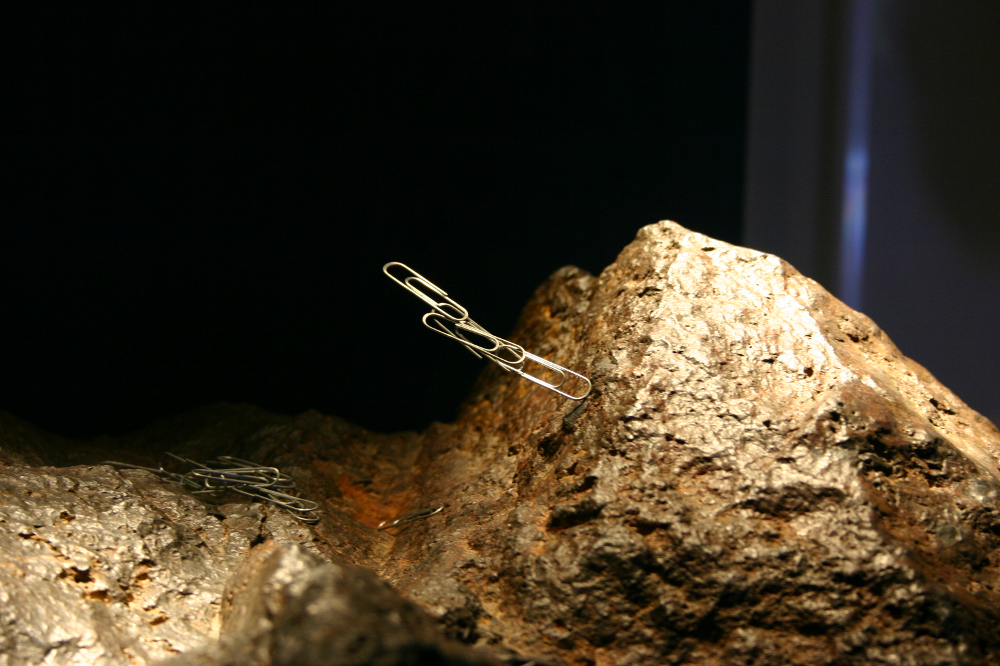
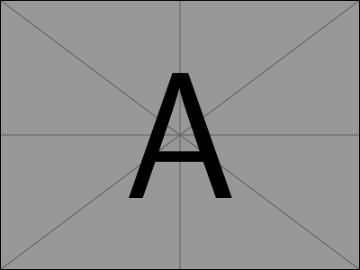
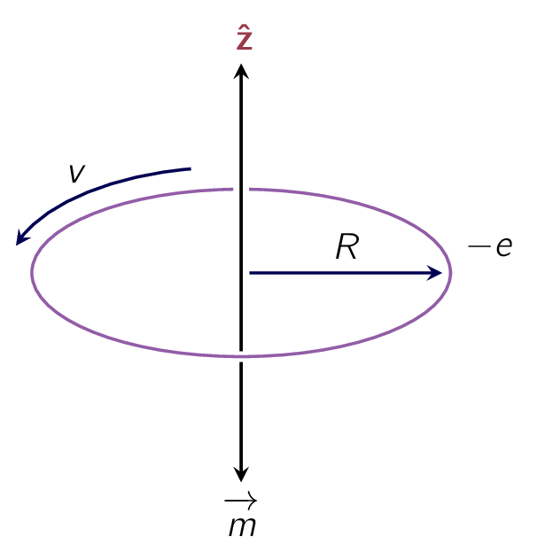

Magnetism is the class of physical attributes which occur through a magnetic field, allowing objects to either attract or repel each other. Because both electric currents and magnetic moments of elementary particles give rise to a magnetic field, magnetism is one of two (2) aspects of electromagnetism.
In this chapter we will shift our focus into materials [77] ¶[77]As we now, bar magnets are generally attributed to exhibiting magnetism, but nature has more variety. which exhibit magnetism through various forms.
If the topic of magnetism ever comes to play during lunch break, [78] Perhaps when you are discussing the current events or why the elevator is again under maintenance at MCI IV. you may think about refrigerator decorations, compass needles, and the North Pole which initially seems to have no obvious connection with moving charges or current-carrying wires.
However, it is important to state, all magnetic phenomena are cause by electric charges in motion. If we could examine a piece of magnetic material on an atomic scale we would find tiny currents:
For macroscopic domain, [79] The domain in which most day-to-day events occur. these current loops are minuscule so we treat them as magnetic dipoles. Ordinarily, they cancel each other out due of the random orientation of the atoms. But when a magnetic field is applied, a net alignment of these magnetic dipoles occurs, and the medium becomes magnetically polarised, or magnetised.
Unlike electric polarisation we have looked previously, which is almost always in the same direction as the -field, some materials acquire a magnetisation parallel to , called paramagnets and some opposite to , called diamagnets. A few substances [80] called ferromagnets, named after to the most common example, iron (Fe). retain their magnetization even after the external field has been removed-for these, the magnetisation is NOT determined by the present field but by the whole magnetic “history” of the object.
- ¶
- Information 4.5: Lode Stones
-

Figure 4.1: Lodestone in the Hall of Gems of the Smithsonian [†-1] Somma. A lodestone, a natural magnet, displayed at the Smithsonian Institution, attracting paper clips 1980. Lodestones are naturally magnetized pieces of the mineral magnetite [†-2] Cribb, W. Dana’s Minerals and How to Study Them 1998, Bowles, J. et al. Rock-forming minerals: Non-silicates: Oxides, hydroxides and sulphides. Geological Society (2011). They are naturally occurring magnets, which can attract iron. The property of magnetism was first discovered in antiquity through lodestones [†-3] De Lacheisserie, E. d. T., Gignoux, D. & Schlenker, M. Magnetism (Springer Science & Business Media, 2005). Pieces of lodestone, suspended so they could turn, were the first magnetic compasses, [†-3] De Lacheisserie, E. d. T., Gignoux, D. & Schlenker, M. Magnetism (Springer Science & Business Media, 2005) and their importance to early navigation is indicated by the name lodestone, which in Middle English means “course stone” or “leading stone”, from the now-obsolete meaning of lode as “journey, way”.
Lodestone is one of only a very few minerals that is found naturally magnetised.
PMPermanent MagnetAn object made from a material that is magnetized and creates its own persistent magnetic fields made of iron are the most familiar examples of magnetism, but from a theoretical point of view they are the most complicated.
We will have a look at ferromagnetism for the end of the chapter, and begin with qualitative models of paramagnetism and diamagnetism.
A magnetic dipole experiences a torque under the effect of a magnetic field (), similar to an electric dipole in an electric field.
Let’s calculate the torque on a rectangular current loop in a uniform field . [81] Since any current loop could be built up from infinitesimal rectangles, with all the “internal” sides canceling, as indicated in Fig. 6.1, there is no real loss of generality here. To begin, centre the loop at the origin, and tilt it an angle from the -axis towards the -axis (Fig. 6.2).
Let point in the direction. The forces on the two (2) sloping sides cancel. [82] they tend to stretch the loop, but they don’t rotate it The forces on the “horizontal” sides are likewise equal and opposite, which makes the net force on the loop is zero, but regardless they generate a torque:
| (4.1) |
The magnitude of the force on each of these segments is
| (4.2) |
and therefore
| (4.3) |
where is the magnetic dipole moment of the loop with Eq. (4.3) giving the torque on any localized current distribution, in the presence of a uniform field; in a nonuniform field it is the exact torque [83] about the center. for a perfect dipole of infinitesimal size.

Here, Eq. (4.3) is identical in form to the electrical analog, Eq. 4.4: . In particular, the torque is again in such a direction as to line the dipole up parallel to the field.
It is this torque which accounts for paramagnetism effect.
Given every electron constitutes a magnetic dipole, [84] picture it, if you wish, as a tiny spinning sphere of charge we might expect paramagnetism to be a universal phenomenon.
Actually, quantum mechanics [85] specifically, the Pauli exclusion principle. tends to lock the electrons within a given atom together in pairs with opposing spins, [86] This is NOT always true for the outermost electrons in unfilled shells. and this effectively neutralises the torque on the combination.
As a result, paramagnetism most often occurs in atoms or molecules with an odd number of electrons, where the “extra” unpaired member is subject to the magnetic torque.
Even here, the alignment is far from complete, given random thermal collisions tend to destroy the order.
In a uniform field, the net force on a current loop is zero:
| (4.4) |
Here, the constant comes outside the integral, and the net displacement around a closed loop vanishes. In a non-uniform field this is no longer the case.
As an example, assume a circular wire ring of radius of , carrying a current of , is suspended above a short solenoid in the “fringing” region (Fig. 6.3). Here has a radial component, and there is a net downward force on the loop (Fig. 6.4):
| (4.5) |
For an infinitesimal loop, with dipole moment , in a field , the force is:
| (4.6) |
Once again the magnetic formula is identical to its electrical “twin,” if we write the latter in the form of:
- ¶
- Information 4.6: An Unfortunate Analogy
-
If you’re starting to get a sense of deja vu, perhaps you will have more respect for those early physicists who thought magnetic dipoles consisted of positive and negative magnetic “charges” (north and south “poles,” they called them), separated by a small distance, just like electric dipoles (Fig. 6.5(a)). They wrote down a “Coulomb’s law” for the attraction and repulsion of these poles, and developed the whole of magnetostatics in exact analogy to electrostatics. It’s not a bad model, for many purposes-it gives the correct field of a dipole (at least, away from the origin), the right torque on a dipole (at least, on a stationary dipole), and the proper force on a dipole (at least, in the absence of external currents). But it’s bad physics, because there’s no such thing as a single magnetic north pole or south pole. If you break a bar magnet in half, you don’t get a north pole in one hand and a south pole in the other; you get two complete magnets. Magnetism is not due to magnetic monopoles, but rather to moving electric charges; magnetic dipoles are tiny current loops (Fig. 6.5(c)), and it’s an extraordinary thing, really, that the formulas involving bear any resemblance to the corresponding formulas for . Sometimes it is easier to think in terms of the “Gilbert” model of a magnetic dipole (separated monopoles), instead of the physically correct “Ampere” model (current loop).
Indeed, this picture occasionally offers a quick and clever solution to an otherwise cumbersome problem
We just copy the corresponding result from electrostatics, changing:
However, if we want to have a closer look at the features of the dipoles, the two models can produce significant results.
Electrons NOT only spin as they also revolve around the nucleus. To give a better understanding of the
aforementioned statement, let’s assume the orbit is a circle [87] ¶ 
While, under the strictest technical definitions, this orbital motion does NOT constitute a steady current, in practice the period:
is imperceptibly short that we might as well assume it is steady-current: [88] The minus sign accounts for the negative charge of the electron.
Following this chain of thought, the orbital dipole moment is:
| (4.7) |
Similar to any other magnetic dipole, this one is subject to a torque when we turn on a magnetic field.
But it’s a lot harder to tilt the entire orbit than it is the spin, so the orbital contribution to paramagnetism is small.
There is, however, a more significant effect on the orbital motion which is worth mention and it is that the electron speeds up or slows down, depending on the orientation of . For whereas the centripetal acceleration is ordinarily sustained by electrical forces alone,
To avoid confusion with the magnetic dipole moment , we will write the electron mass with subscript: .
| (4.8) |
in the presence of a magnetic field there is an additional force, described as:
For the sake of argument, let’s say that is perpendicular to the plane of the orbit, as shown in Fig. 6.10; then
| (4.9) |
Under these conditions, the new speed is greater than v:
| (4.10) |
or, assuming the change is small,
| (4.11) |
When is turned on, then, the electron speeds up. [89] I said (Eq. 5.11) that magnetic fields do no work, and are incapable of speeding a particle up. I stand by that. However, as we shall see in Chapter 7, a changing magnetic field induces an electric field, and it is the latter that accelerates the electrons in this instance. A change in orbital speed means a change in the dipole moment ( Eq. (4.7) ):
| (4.12) |
Notice that the change in is opposite to the direction of . (An electron circling the other way would have a dipole moment pointing upward, but such an orbit would be slowed down by the field, so the change is still opposite to .) Ordi- narily, the electron orbits are randomly oriented, and the orbital dipole moments cancel out. But in the presence of a magnetic field, each atom picks up a little "extra" dipole moment, and these increments are all antiparallel to the field. This is the mechanism responsible for diamagnetism. It is a universal phenomenon, affecting all atoms. However, it is typically much weaker than paramagnetism, and is therefore observed mainly in atoms with even numbers of electrons, where paramagnetism is usually absent.
In deriving Eq. (4.12) , I assumed that the orbit remains circular, with its original radius . I cannot offer a justification for this at the present stage. If the atom is stationary while the field is turned on, then my assumption can be proved- this is not magnetostatics, however, and the details will have to await Chapter 7 (see Prob. 7.52). If the atom is moved into the field, the situation is enormously more complicated. But never mind-I’m only trying to give you a qualitative account of diamagnetism. Assume, if you prefer, that the velocity remains the same while the radius changes-the formula ( Eq. (4.12) ) is altered (by a factor of 2), but the qualitative conclusion is unaffected. The truth is that this classical model is fundamentally flawed, [90] diamagnetism is really a quantum phenomenon. so there’s not much point in refining the details. What is important is the empirical fact that in diamagnetic materials the induced dipole moments point opposite to the magnetic field.
In the presence of a magnetic field, matter becomes magnetized; that is, upon microscopic examination, it will be found to contain many tiny dipoles, with a net alignment along some direction. We have discussed two mechanisms that account for this magnetic polarization:
- 1.
- paramagnetism (the dipoles associated with the spins of unpaired electrons experience a torque tending to line them up parallel to the field), and
- 2.
- diamagnetism (the orbital speed of the electrons is altered in such a way as to change the orbital dipole moment in a direction opposite to the field)
Whatever the cause, we describe the state of magnetic polarization by the vector quantity
| (4.13) |
where is called the magnetization and plays a role analogous to the polarization P in electrostatics. In the following section, we will not worry about how the magnetization got there-it could be paramagnetism, diamagnetism, or even ferromagnetism-we shall take M as given, and calculate the field this magnetization itself produces.
Incidentally, it may have surprised you to learn that materials other than the famous ferromagnetic trio (iron, nickel, and cobalt) are affected by a magnetic field at all. You cannot, of course, pick up a piece of wood or aluminum with a magnet. The reason is that diamagnetism and paramagnetism are extremely weak:
If you were to suspend a piece of paramagnetic material above a solenoid, as in Fig. 6.3, the induced magnetization would be upward, and hence the force downward. By contrast, the magnetization of a diamagnetic object would be downward and the force upward. In general, when a sample is placed in a region of nonuniform field, the paramagnet is attracted into the field, whereas the diamagnet is repelled away. But the actual forces are pitifully weak-in a typical experimental arrangement the force on a comparable sample of iron would be or times as great. That’s why it was reasonable for us to calculate the field inside a piece of copper wire, say, in Chapter 5, without worrying about the effects of magnetization.
-
¶
- PMPermanent Magnet
An object made from a material that is magnetized and creates its own persistent magnetic field
- 1.
- Somma. A lodestone, a natural magnet, displayed at the Smithsonian Institution, attracting paper clips 1980
- 2.
- Cribb, W. Dana’s Minerals and How to Study Them 1998, Bowles, J. et al. Rock-forming minerals: Non-silicates: Oxides, hydroxides and sulphides. Geological Society (2011)
- 3.
- De Lacheisserie, E. d. T., Gignoux, D. & Schlenker, M. Magnetism (Springer Science & Business Media, 2005)
- [78].
- Perhaps when you are discussing the current events or why the elevator is again under maintenance at MCI IV.
- [79].
- The domain in which most day-to-day events occur.
- [80].
- called ferromagnets, named after to the most common example, iron (Fe).
- [81].
- Since any current loop could be built up from infinitesimal rectangles, with all the “internal” sides canceling, as indicated in Fig. 6.1, there is no real loss of generality here.
- [82].
- they tend to stretch the loop, but they don’t rotate it
- [83].
- about the center.
- [84].
- picture it, if you wish, as a tiny spinning sphere of charge
- [85].
- specifically, the Pauli exclusion principle.
- [86].
- This is NOT always true for the outermost electrons in unfilled shells.
- [88].
- The minus sign accounts for the negative charge of the electron.
- [89].
- I said (Eq. 5.11) that magnetic fields do no work, and are incapable of speeding a particle up. I stand by that. However, as we shall see in Chapter 7, a changing magnetic field induces an electric field, and it is the latter that accelerates the electrons in this instance.
- [90].
- diamagnetism is really a quantum phenomenon.